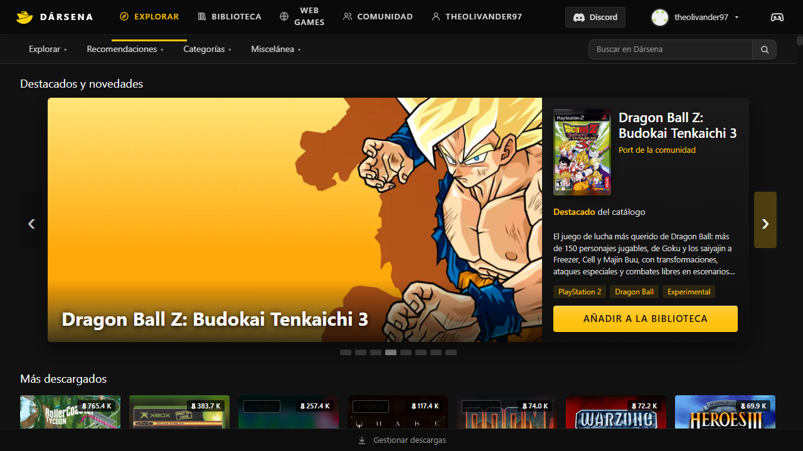
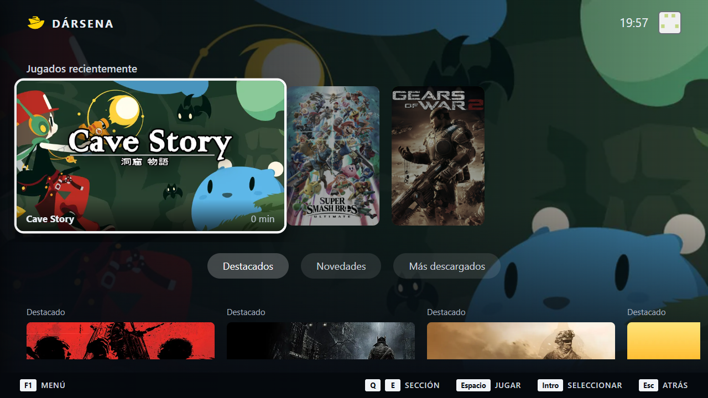
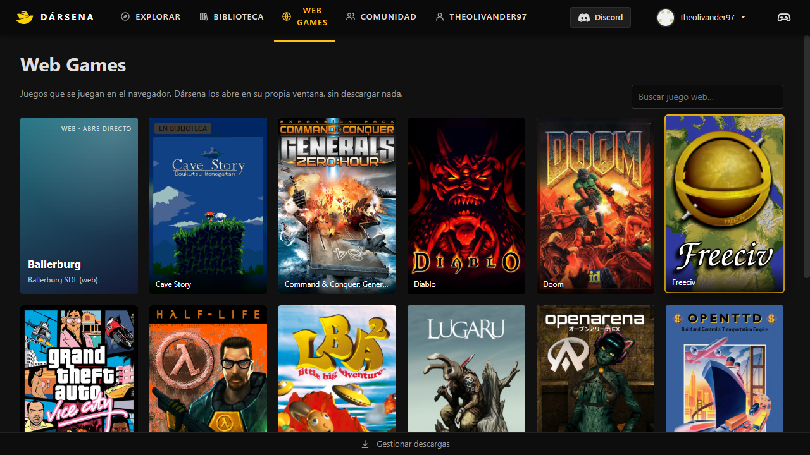
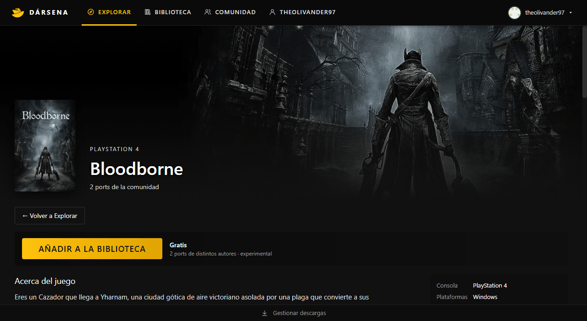
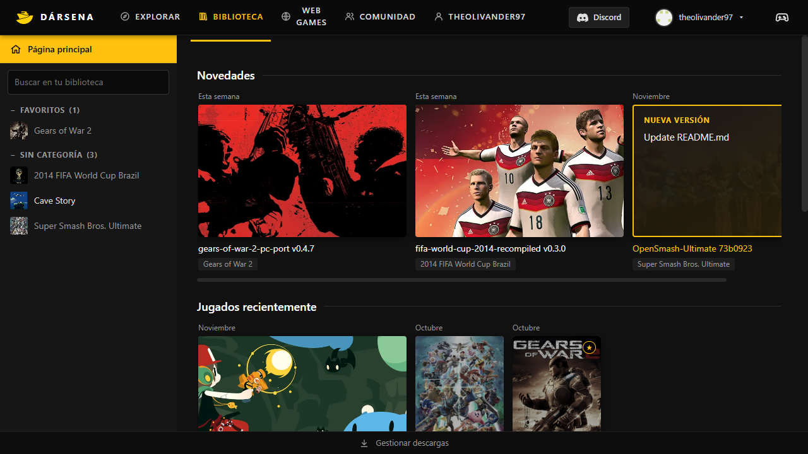
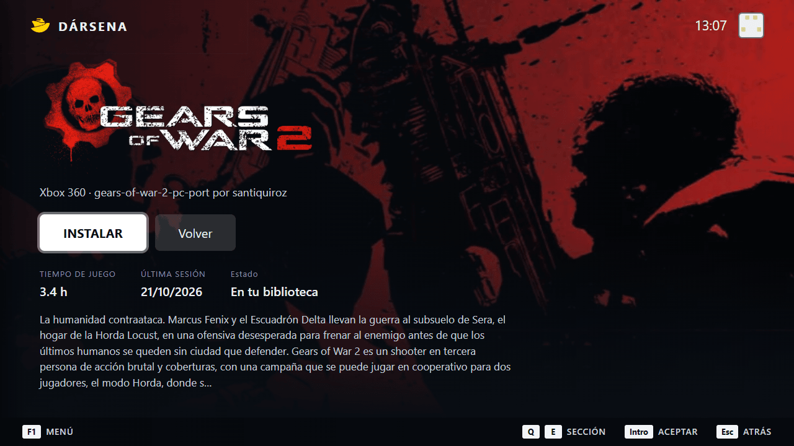

Launcher de ports para Windows
Tus ports favoritos, en un solo sitio.
Dársena descarga, actualiza y abre los juegos que la comunidad ha llevado a PC. Gratis, de código abierto y sin anuncios.

Encuentra, descarga y juega.
Más de 600 ports de la comunidad con su ficha, sus requisitos y las reseñas de otros jugadores.
Un catálogo vivo
Sinopsis, requisitos aproximados y si tu PC aguanta el juego antes de descargarlo.
Siempre al día
Baja las builds oficiales de cada autor, las comprueba con SHA-256 y las actualiza por ti.
Tu biblioteca
Tiempo de juego, estanterías, accesos directos y tus partidas guardadas en la nube.
Pantalla grande
Desde el sofá, con mando.
Una vista a pantalla completa pensada para el mando o el teclado: tu biblioteca, el catálogo y las descargas sin tocar el ratón.


Web Games
Juegos que se abren en el navegador.
- Se juegan en su propia ventana, sin descargar nada.
- Cuentan en tu tiempo de juego y en tu biblioteca.
- Solo páginas de sus autores: nunca juegos comerciales alojados por terceros.
Así se ve.
Explora, abre la ficha y juega.



Descarga Dársena.
Es gratis. Se actualiza sola.
- Windows 10 u 11 (64 bits)
- Instalador de unos 7 MB
- Sin anuncios ni cuentas
Preguntas frecuentes
¿Dársena incluye juegos?
No. Solo lista ports hechos por la comunidad y descarga las builds que sus autores publican en GitHub. Los datos del juego original los pones tú, de tu propia copia.
¿Por qué Windows me avisa al instalar?
El instalador todavía no tiene firma digital, así que SmartScreen desconfía de él. Pulsa «Más información» y luego «Ejecutar de todas formas». El código y la compilación son públicos en GitHub.
¿Es de código abierto?
Sí, bajo GPL-3.0-or-later. Puedes leer el código, compilarlo tú o proponer cambios.
Soy autor de un port, ¿cómo lo añado?
Desde la propia aplicación, en «Subir un port», o con una solicitud en el repositorio. Mira la wiki.